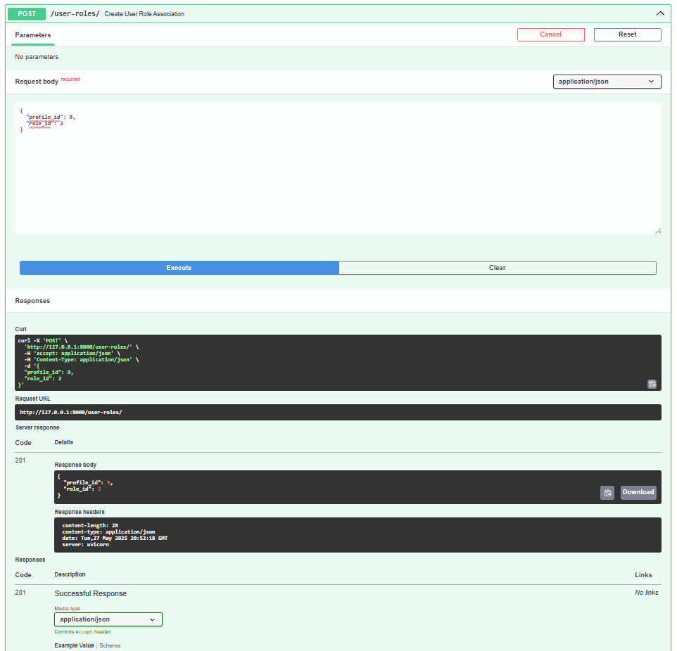
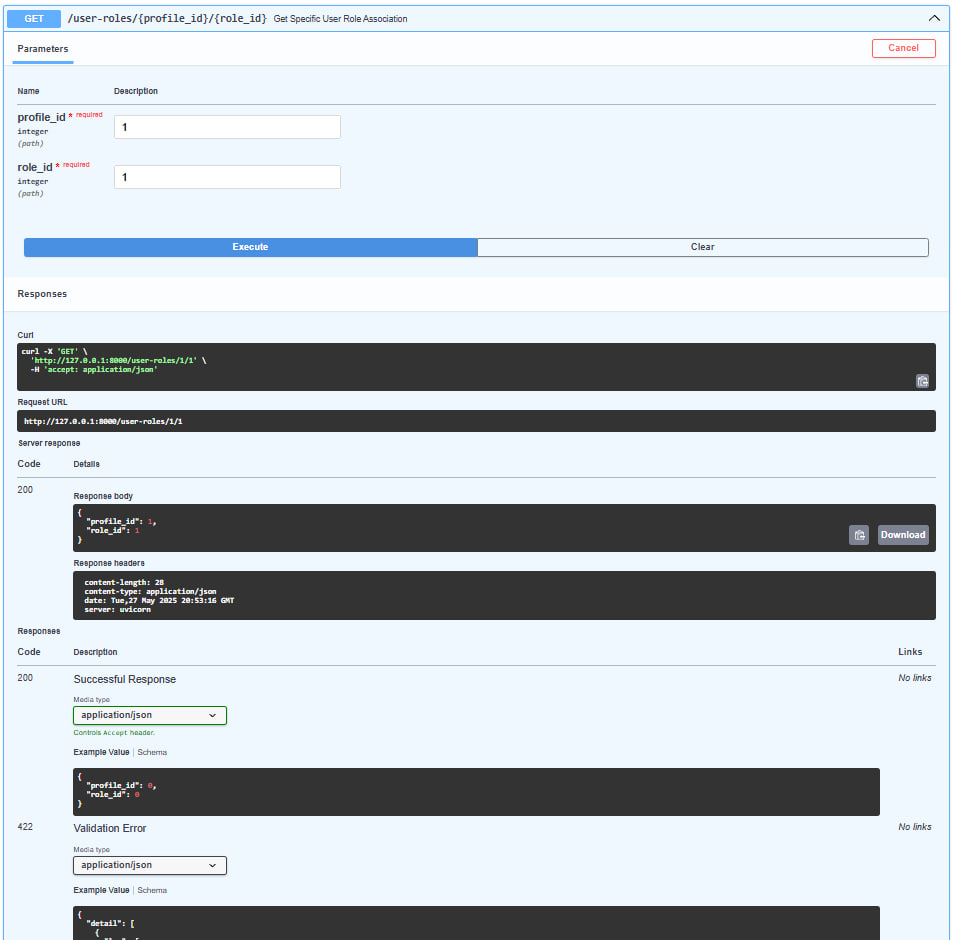
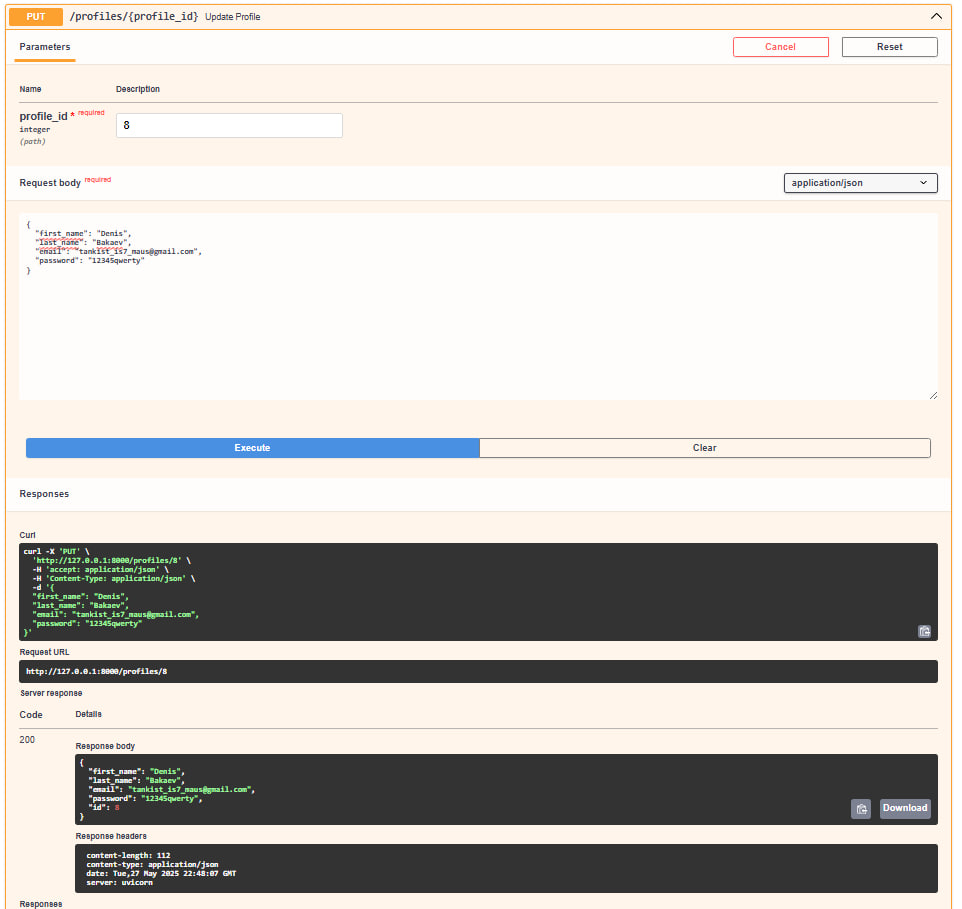
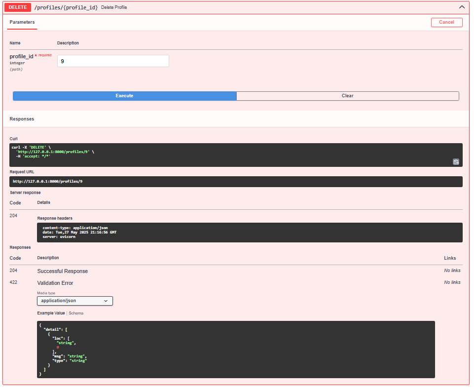

Виконали
студент 2-го курсу, групи ІО-32 Кекух Андрій Telegram
студент 2-го курсу, групи ІО-32 Цветков Влад Telegram
студент 2-го курсу, групи ІО-32 Лопушенко Кирило Telegram
студент 2-го курсу, групи ІО-32 Бакаєв Денис Telegram
студент 2-го курсу, групи ІО-32 Шведенко Іван Telegram
Керівник
доцент кафедри ОТ ФІОТ, к.т.н., доцент Андрій БОЛДАК
НТУУ "КИЇВСЬКИЙ ПОЛІТЕХНІЧНИЙ ІНСТИТУТ імені ІГОРЯ СІКОРСЬКОГО
Факультет інформатики та обчислювальної техніки
Кафедра обчислювальної техніки
Київ
Вступ
Основна мета цієї розробки – створення інтелектуального інструменту для автоматизованого аналізу медіа-контенту, що включає збір та обробку даних. У сучасному світі, де інформація відіграє ключову роль, для організацій різних типів життєво необхідно розуміти вплив медіа на їх діяльність, імідж та продукти. Наша система надасть можливість точно оцінювати громадську думку, аналізувати реакції аудиторії на пропозиції та ініціативи, та визначати актуальні тенденції.
Важливість цієї роботи підкреслюється постійним зростанням обсягів цифрової інформації та гострою потребою в інструментах, здатних швидко та ефективно обробляти великі обсяги даних для покращення якості управлінських рішень. Хоча існують інші системи аналізу медіа, більшість з них мають обмеження, або щодо типів оброблюваного контенту, або у використанні передових технологій, таких як обробка природної мови та машинне навчання. Розробка інноваційних рішень, що поєднують ці технології, дозволяє значно підвищити точність і швидкість аналізу медійного простору.
Цей інструмент відрізняється широкими можливостями, забезпечуючи аналіз різних форматів контенту на основі найсучасніших технологій. Впровадження цієї системи дозволить досягти техніко-економічного ефекту за рахунок підвищення точності аналізу, скорочення часу на розробку рішень та оптимізації управління інформаційними ресурсами, що матиме значний позитивний вплив на бізнес-середовище, політичні процеси та діяльність громадського сектору.
Розроблення загальних вимог до системи
Аналіз предметної області
Вступ
Система аналізу медіа-контенту є ключовим інструментом у сучасному інформаційному суспільстві, де цифрові дані стрімко зростають. Вона дозволяє структурувати різні типи контенту, глибше розуміти його значення та вплив на аудиторію, виявляти тренди й аналізувати громадську думку. У цьому документі подано огляд основних визначень, пов'язаних із медіа-контентом. Розглянуто різні підходи до вирішення завдань аналізу контенту та проведено порівняльний аналіз існуючих рішень. Особливу увагу приділено необхідності розробки нових інформаційних систем, що поєднують універсальність, сучасні технології та ефективність обробки великих обсягів даних для підвищення точності та релевантності аналізу.
Зміст
- Основні визначення
- Підходи та способи вирішення завдання
- Порівняльна характеристика існуючих засобів вирішення завдання
- Висновки
- Посилання
Основні визначення
Медіа-контент [[1]] – це змістове наповнення цифрових ресурсів, яке об'єднує інформацію різних форматів і способів кодування, зокрема текстову, графічну, аудіо- та відеоматеріали. Його основна мета – задовольняти соціальні, інформаційні та емоційні потреби людини. Таким чином, медіаконтент відіграє ключову роль у сучасному суспільстві, виступаючи важливим засобом подання інформації та комунікації в таких сферах, як культура, освіта, політика й економіка.
Обробка природної мови (NLP) [[2]] – це вивчення та застосування методів та інструментів, які дозволяють комп’ютерам обробляти, аналізувати, інтерпретувати та міркувати про людську мову. NLP є міждисциплінарною сферою, яка поєднує в собі методи, розроблені в таких галузях, як лінгвістика та інформатика.
Інтелектуальний аналіз тексту (Text mining) [[3]] - інтелектуальний аналіз даних (англ. Data Mining) та штучний інтелект є напрямами, спрямованими на вилучення корисної інформації з текстових документів за допомогою ефективних методів машинного навчання та обробки природної мови. Інтелектуальний аналіз тексту застосовує ті самі підходи до опрацювання інформації, що й аналіз даних, однак між ними існують відмінності. Головна різниця полягає в методах реалізації та характері оброблюваних джерел: інтелектуальний аналіз даних працює переважно зі структурованими базами та сховищами інформації, тоді як аналіз тексту зосереджується на електронних бібліотеках і текстових корпусах.
Токенізація [[4]] - Це процес поділу текстового фрагмента на менші складові, звані токенами, які можуть бути окремими словами, фразами, символами або іншими значущими елементами. Такий підхід сприяє спрощенню подальшого аналізу та обробки в межах обробки природної мови (NLP) і текстового аналізу.
Big Data (Великі дані) [[5]] – Це великий обсяг структурованої та неструктурованої інформації, який включає також різноманітні інструменти, методи та підходи, призначені для ефективної обробки, аналізу та зберігання даних.
Метадані [[6]] – це засіб класифікації, упорядкування та характеристики даних. Тобто, метадані — це дані про дані (про їх склад, зміст, статус, походження, місцезнаходження, якість, формати, обсяг, умови доступу, авторські права тощо).
Інформаційний шум [[7]] – неважлива, вторинна інформація, якою супроводжується або заміщується основне повідомлення.
Моніторинг [[8]] – це систематичне відстеження якісних і кількісних показників, які характеризують якусь діяльність та/або поточну ситуацію. Головна мета моніторингу — «знімати показники» стану об'єкта спостереження і виявляти розбіжності з плановими (або виявляти тенденції розвитку й передбачати майбутні стани).
API [[9]] – це набір інструкцій, які дозволяють різним програмам спілкуватись між собою та обмінюватись даними.
Семантичний аналіз [[10]] – це процес визначення смислу та інтерпретації значення слів та фраз у контексті, в якому вони вживаються. Основна мета семантичного аналізу тексту полягає в тому, щоб зрозуміти, що автор намагається передати та який вплив він має на читачів.
Підходи та способи вирішення завдання
Для створення ефективної системи аналізу медіа-контенту необхідно використовувати різноманітні методи та підходи, які дозволяють всебічно досліджувати та інтерпретувати великі обсяги даних з різних точок зору. Нижче представлено основні методології та можливі способи розв’язання завдань, пов’язаних із аналізом медіа-контенту.
1. Традиційні методи контент-аналізу
1.1. Ручний контент-аналіз
Ручний контент-аналіз передбачає безпосередню участь дослідника у процесі аналізу тексту. Цей метод дозволяє глибше зрозуміти контекст та зміст тексту, виявляти теми, мотиви та інтерпретувати їх значення. Проте, ручний аналіз є трудомістким і потребує багато часу.
1.2. Методи якісного аналізу
До методів якісного аналізу належать:
- Традиційний аналіз: дослідники розглядають тексти у контексті їх створення, мотивації авторів та очікуваного впливу на аудиторію.
- Феноменологічний аналіз: ідентифікація суб'єктивного досвіду та особистісних смислів.
- Аналіз дискурсу: вивчення конструктивного характеру мови і соціальної реальності.
- Аналіз медійних рамок: вивчення того, як медіа представляють інформацію та впливають на сприйняття аудиторією.
- Етнографічний аналіз: глибокі дослідження медіа-контенту у контексті конкретної культури або групи людей.
- Емпіричний аналіз інтерфейсів і дизайну: дослідження впливу дизайну на взаємодію користувача з контентом.
- Символьний аналіз: дослідження використання символів у медійних текстах для розкриття їх значення.
2. Кількісні методи контент-аналізу
2.1. Обробка природної мови (NLP)
NLP (Natural Language Processing) включає методи та інструменти для автоматичного аналізу тексту. Це дозволяє обробляти великі обсяги даних і виявляти ключові слова, фрази та тенденції. Основні завдання NLP включають видобування даних, розпізнавання мови, машинний переклад, інформаційний пошук та інші.
2.2. Інтелектуальний аналіз тексту
Інтелектуальний аналіз тексту застосовує методи машинного навчання для обробки великих масивів текстових даних. Це охоплює класифікацію, групування, виявлення ключових понять, створення таксономій, узагальнення змісту документів та оцінку тональності текстів.
2.3. Статистичний аналіз
Статистичний аналіз використовує математичні моделі для вивчення залежностей, кореляцій та регресій у медіа-дослідженнях. Це допомагає виявляти статистично значущі закономірності у медіа-контенті.
2.4. Аналіз часових рядів
Аналіз часових рядів дозволяє досліджувати динаміку зміни медіа-контенту у часі. Це допомагає виявляти, які теми або тренди змінюються з плином часу, та як це впливає на аудиторію.
2.5. Токенізація
Токенізація - це процес розбиття тексту на окремі "токени" або одиниці, які можуть бути словами, фразами або реченнями. Це допомагає перетворити текст в структуровану форму для подальшого аналізу.
2.6. Аналіз синтаксичних структур
Аналіз синтаксичних структур дозволяє визначити відношення між словами у тексті та зрозуміти структуру речень. Це допомагає більш точно аналізувати зміст тексту.
3. Комбіновані підходи
Комбіновані підходи в медіа-аналітиці передбачають поєднання якісних і кількісних методів, що дає змогу отримати комплексне уявлення про досліджуваний контент. Якісні методи сприяють глибшому аналізу змісту та контексту, розкриваючи приховані значення, символіку та культурні коди, тоді як кількісні дозволяють обробляти великі обсяги даних і робити статистично обґрунтовані висновки.
Наприклад, кількісні методи допомагають визначити частоту згадування певних тем або понять у різних медіа, що дає змогу оцінити їхню популярність і суспільний резонанс. Водночас якісний аналіз дозволяє з’ясувати, як саме ці теми подані: з позитивним чи негативним забарвленням, які використовуються наративи, які ідеї та цінності підкреслюються. Поєднання цих підходів дає змогу отримати цілісне уявлення про явище, підвищуючи точність і змістовність медіа-аналітики.
4. Використання сучасних технологій
Сучасні технології займають ключову роль у медіа-аналітиці, адже обробка величезних обсягів даних вручну стала практично неможливою. Використання технологічних рішень дозволяє аналізувати контент більш ефективно, швидше і з меншими витратами ресурсів. Основні напрями, де сучасні технології застосовуються для аналізу медіа-контенту, включають машинне навчання, штучний інтелект та роботу з великими даними.
4.1. Машинне навчання та штучний інтелект
Машинне навчання та штучний інтелект забезпечують автоматизацію процесів аналізу медіа-контенту. Це дозволяє не тільки прискорити обробку даних, але й покращити якість аналізу завдяки точності моделей, що навчаються на великих масивах даних. Наприклад, алгоритми класифікації можуть автоматично сортувати медіа-контент за темами, а методи кластеризації групувати схожі за змістом тексти, що дозволяє виявити тренди та закономірності в масивах медіа-даних.
Штучний інтелект також дозволяє будувати предиктивні моделі, які можуть прогнозувати поведінку аудиторії або оцінювати ймовірність розвитку тих чи інших тенденцій у медіа. Наприклад, аналіз соціальних мереж може допомогти передбачити, як новина або подія вплине на громадську думку. Завдяки цьому дослідники та аналітики можуть приймати більш обґрунтовані рішення щодо впливу медіа на суспільство.
4.2. Великі дані (Big Data)
Технології обробки великих даних дають змогу працювати з величезними обсягами інформації, які складно або неможливо аналізувати традиційними методами. Це особливо актуально для медіа-аналітики, оскільки сучасний медіапростір щоденно генерує величезну кількість контенту, включаючи тексти, зображення, відео, аудіо та публікації в соціальних мережах.
Застосування технологій Big Data допомагає виявляти приховані закономірності, тенденції та кореляції, які важко розпізнати за допомогою ручного аналізу. Використання цих методів дає можливість швидко отримувати актуальні результати, зокрема оцінювати громадські настрої, відстежувати тренди та зміни в суспільному сприйнятті. Крім того, великі дані розширюють можливості аналізу, охоплюючи не лише текстову інформацію, а й мультимедійний контент, такий як зображення та відео.
Поєднання машинного навчання та технологій Big Data надає дослідникам потужний інструмент для глибокого аналізу складних і динамічних медіа-екосистем.
Порівняльна характеристика існуючих засобів вирішення завдання
| Властивості | Semantrum | Neticle Media Intelligence | YouScan |
|---|---|---|---|
| Functionality (Функціональність) | Широкий спектр інструментів для моніторингу та аналізу ЗМІ, підтримка різних типів контенту, включаючи текст, відео та зображення. | Аналіз медіа-контенту в реальному часі, відстеження трендів, виявлення ключових слів і емоцій. | Моніторинг соціальних мереж, визначення настроїв, робота з зображеннями, інтеграція з CRM. |
| Usability (Зручність) | Зручний інтерфейс, легко налаштовувані дашборди, зручна візуалізація даних. | Проста навігація та інтуїтивний інтерфейс, налаштовувані сповіщення та звіти. | Інтуїтивний інтерфейс, прості налаштування для створення звітів і відстеження активності в соцмережах. |
| Reliability (Надійність) | Висока стабільність роботи, підтримка великих обсягів даних, регулярні оновлення. | Забезпечує стабільний доступ до аналітичних даних з можливістю резервного копіювання. | Надійне відстеження та аналіз великих обсягів даних, зокрема з соцмереж. |
| Performance (Продуктивність) | Швидка обробка запитів, можливість роботи з великими обсягами даних. | Швидка обробка результатів моніторингу та виведення звітів. | Підтримка великих обсягів даних, висока швидкість обробки інформації в реальному часі. |
| Supportability (Підтримка) | Підтримка 24/7, доступні оновлення, документація та навчальні матеріали. | Підтримка користувачів через чат і email, регулярні оновлення, навчальні матеріали. | Широкі можливості для інтеграції з іншими системами, підтримка користувачів через різні канали зв'язку. |
Висновки
Аналіз медіа-контенту є надзвичайно актуальним завданням у сучасному інформаційному суспільстві. З огляду на постійне збільшення обсягів даних і їхню різноплановість, цей процес стає дедалі складнішим, але й більш затребуваним у багатьох сферах.
На основі проведеного аналізу існуючих інструментів і підходів можна дійти наступних висновків:
1. Доцільність розробки нової інформаційної системи
Хоча нинішні інструменти аналізу медіа-контенту (такі як Semantrum, Neticle Media Intelligence та YouScan) надають корисні функції, вони часто обмежені у своїй універсальності та здатності обробляти різні типи контенту одночасно. Більшість з них спрямовані на вирішення лише частини завдань, що стосуються тексту, графіки, аудіо або відео окремо.
Необхідність створення нової системи полягає у розробці рішення, що поєднує в собі наступні переваги:
- Універсальність: підтримка аналізу різних типів медіа-контенту, що дозволить зібрати всі дані в одному місці.
- Сучасні технології: використання новітніх технологій обробки природної мови (NLP), машинного навчання та штучного інтелекту для глибшого аналізу та виявлення патернів у контенті.
- Ефективність обробки: застосування підходів великих даних для швидкої обробки великих обсягів інформації, що є критично важливим для своєчасного прийняття рішень.
- Висока точність: нова система повинна забезпечувати вищу точність та релевантність результатів аналізу, завдяки вдосконаленим алгоритмам семантичного аналізу.
2. Необхідність інтеграції з сервісами третіх сторін
Оскільки значна частина медіа-контенту створюється і розповсюджується через соціальні мережі та онлайн-платформи, інтеграція з сервісами третіх сторін є критично важливою. Це дозволить отримувати доступ до великого масиву даних і розширювати можливості системи в реальному часі.
Ключові елементи інтеграції включають:
- API: використання існуючих API (соціальних мереж, новинних платформ тощо) для збору та аналізу медіа-контенту з різних джерел, що зменшить час та зусилля на збирання інформації.
- Хмарні технології [[15]]: інтеграція з хмарними сервісами для забезпечення масштабованості та доступу до потужних обчислювальних ресурсів.
- Партнерство з провайдерами: співпраця з постачальниками послуг обробки природної мови та штучного інтелекту, що дозволить швидко впроваджувати необхідні функції.
3. Обмеження модифікації існуючих систем
Хоча модифікація існуючих інструментів може здаватися більш економічно вигідною, вона має значні обмеження. Багато з цих систем були створені для вирішення вузько спрямованих завдань і не підтримують сучасні технології чи типи даних, які потребують інтеграції.
Нова інформаційна система, яка буде спроектована з урахуванням сучасних викликів і можливостей, матиме переваги, такі як більша гнучкість, ширший функціонал і можливість роботи з різноманітними типами контенту.
4. Вплив на бізнес і аналітику
Розробка нової системи стане вирішальним кроком для компаній, які прагнуть отримувати максимально релевантні та актуальні інсайти з медіа-контенту. Вона дозволить значно покращити процес прийняття рішень на основі даних, підвищить ефективність маркетингових кампаній та забезпечить глибокий аналіз взаємодії користувачів з контентом і брендами.
Таким чином, створення нової системи для інтелектуального аналізу медіа-контенту є не лише доцільним, але й необхідним кроком для забезпечення конкурентоспроможності на ринку, де доступ до інформації відіграє ключову роль у бізнесі та прийнятті рішень.
Посилання
- Медіа-контент
- Обробка природної мови
- Інтелектуальний аналіз тексту
- Токенізація
- Біг дата
- Метадані
- Інформаційний шум
- Моніторинг
- API
- Семантичний аналіз
- Аналіз тексту
- Комбіновані підходи
- Машинне навчання та штучний інтелект
- Хмарні технології (Сloud Technology)
- Semantrum
- Neticle Media Intelligence
- YouScan
Запити зацікавлених осіб
Вступ
Запити зацікавлених осіб відображають їхні потреби та очікування щодо ефективності роботи системи аналізу медіа-контенту. Вони можуть стосуватися різних аспектів, таких як швидкість обробки даних, якість аналізу та його результативність. Серед зацікавлених сторін – комерційні компанії, громадські організації, політичні партії, маркетингові агентства та інфлюенсери.
Мета
Створення та впровадження системи аналізу медіа-контенту має на меті забезпечення ефективного моніторингу та глибокого аналізу інформаційного простору. Це дає змогу оперативно відстежувати медійні тенденції, оцінювати суспільну реакцію на події, бренди та політичні кампанії, а також виявляти ключові фактори, що впливають на громадську думку.
Завдяки такій системі можна не лише отримувати релевантні дані, а й формувати стратегічні управлінські рішення, ґрунтуючись на об’єктивному аналізі. Комерційні компанії можуть використовувати аналітику медіа-контенту для покращення репутаційного менеджменту, розробки ефективних маркетингових кампаній та адаптації комунікаційної політики відповідно до потреб цільової аудиторії. Політичні та громадські організації отримують можливість оцінювати рівень підтримки населення, аналізувати інформаційні впливи та розробляти стратегії взаємодії з громадянами.
Окрім цього, система аналізу медіа відіграє важливу роль у протидії дезінформації та фейковим новинам. Вона дозволяє здійснювати перевірку фактів, аналізувати джерела інформації та визначати ступінь її достовірності. Це особливо актуально в умовах інформаційної війни та масового поширення маніпулятивного контенту.
Завдяки поєднанню інструментів штучного інтелекту, машинного навчання та технологій обробки великих даних така система стає потужним засобом для виявлення прихованих закономірностей, прогнозування майбутніх трендів та підвищення ефективності комунікацій у різних сферах. Вона сприяє побудові прозорого, об’єктивного та достовірного інформаційного середовища, що є важливим для розвитку як бізнесу, так і суспільства в цілому.
Контекст
Цей документ містить розгорнутий аналіз сценаріїв використання системи, в якому детально описані всі ключові аспекти її функціонування. Для кожного сценарію наводяться основні учасники, передумови реалізації, очікувані результати та можливі винятки, що можуть виникнути в процесі виконання. Кожен сценарій має унікальну назву та чітко визначену послідовність кроків, що відображає алгоритм дій для досягнення поставлених цілей.
Окрім цього, документ містить вичерпний опис користувачів системи, їхніх ролей та функціональних можливостей, що дозволяє зрозуміти рівень їхньої взаємодії із платформою. Детально викладені вимоги до системи допомагають сформувати уявлення про її технічні характеристики, продуктивність, безпеку та інші критично важливі параметри. Такий підхід сприяє ефективному плануванню впровадження системи та оптимізації її роботи під потреби кінцевих користувачів.
Окрему увагу приділено питанням зручності використання, продуктивності та точності аналізу медіа-даних. Документ висвітлює потенційні проблеми, які можуть виникнути під час взаємодії користувачів із системою, та пропонує шляхи їх усунення. Завдяки цьому можна заздалегідь виявити вузькі місця у функціональності, що дозволить уникнути можливих недоліків у майбутньому та підвищити ефективність роботи системи.
Таким чином, даний документ є комплексним посібником для розробників, аналітиків і кінцевих користувачів, що забезпечує всебічне розуміння принципів роботи системи аналізу медіа-контенту, її можливостей та способів їхньої реалізації.
Основні визначення та скорочення
Медіа-контент [1] - це інформаційні матеріали, які створюються, поширюються або передаються за допомогою різних медіа-ресурсів, таких як текст, зображення, аудіо, відео та мультимедійні файли. Вони використовуються для комунікації з аудиторією через медіа-платформи, включаючи соціальні мережі, телебачення, радіо та інтернет.
Ідентифікатор [2] - це унікальний ключ або набір даних, що використовується для однозначного визначення об’єкта або користувача в системі. Ідентифікатори можуть бути представлені у вигляді чисел, букв або комбінацій символів і застосовуються для розрізнення користувачів, транзакцій, записів та інших сутностей.
Бізнес-вимоги [3]— це вимоги, які відображають цілі та завдання, які компанія чи організація прагне досягти за допомогою певного проєкту або рішення. Бізнес-вимоги визначають, що має бути зроблено для того, щоб система, продукт чи процес відповідали стратегічним i операційним потребам бізнесу.
Аналітика [4] - це процес збирання, обробки та аналізу даних для отримання корисних висновків, які допомагають у прийнятті рішень. У сфері медіа-аналітики цей процес включає оцінку показників ефективності, аудиторії, впливу контенту, що дозволяє покращити стратегії взаємодії з користувачами.
Обліковий запис користувача [5] - це персональний профіль в інформаційній системі або на онлайн-платформі, який дозволяє користувачеві отримувати доступ до функцій або послуг, зберігаючи його персональні дані, налаштування, історію активності та права доступу.
Автоматизація [6] - це процес використання технологій для виконання завдань з мінімальною участю людини. У контексті ІТ, автоматизація дозволяє скоротити час і ресурси на виконання рутинних операцій, таких як обробка даних, оновлення систем або взаємодія з користувачами.
Валідація [7] - це процес перевірки правильності та відповідності введених даних встановленим правилам або вимогам. Валідація використовується для забезпечення коректності інформації, яка вводиться в систему, з метою уникнення помилок та підвищення якості даних.
Верифікація [8]— це процес перевірки, чи відповідає продукт, система або процес визначеним вимогам і специфікаціям. Іншими словами, верифікація відповідає на запитання: "Чи правильно ми будуємо продукт?" Її основною метою є забезпечення того, що кожен етап розробки відповідає встановленим вимогам і технічним умовам.
Посилання
- Медіа контент
- Ідентифікатор
- Бізнес Вимоги
- Аналітика
- Обліковий запис користувача
- Автоматизація
- Валідація
- Верифікація
Короткий зміст
- Характеристика ділових процесів
- Короткий огляд продукту
- Функціональність
- Практичність
- Надійність
- Продуктивність
- Експлутаційна придатність
Характеристика ділових процесів
Характеристика ділових процесів системи полягає у визначенні основних етапів взаємодії між системою та зацікавленими сторонами, а також у детальному описі ресурсів, що використовуються для виконання цих процесів.
Важливо визначити зовнішні та внутрішні чинники, що впливають на бізнес. До зовнішніх факторів (бізнес-акторів) належать ті, хто формує вимоги до бізнесу, а до внутрішніх (робітників) – ті, хто безпосередньо забезпечує виконання завдань всередині організації. Далі подано загальну характеристику цих ролей та їх діяльності в межах бізнесу.
Зовнішні фактори (бізнес-актори):
- Клієнти та постачальники даних – компанії, що використовують систему для аналізу медіа-контенту, а також джерела контенту (новинні сайти, соціальні мережі), які забезпечують дані для аналізу.
- Регуляторні органи – впливають через закони щодо збору, обробки та зберігання даних, встановлюючи правила функціонування системи.
- Інвестори – забезпечують фінансування та можуть впливати на пріоритети вдосконалення системи.
Внутрішні фактори (робітники):
- Аналітики та інженери з обробки даних – відповідають за інтерпретацію результатів, розробку алгоритмів збору і аналізу медіа-контенту, а також впровадження інструментів машинного навчання.
- Розробники – забезпечують функціонування та розвиток системи, реалізуючи нові функції.
- Керівники проєкту та маркетологи – координують команду, встановлюють пріоритети, аналізують вимоги ринку та формують стратегію просування системи.
Ці ролі взаємодіють між собою для досягнення загальних цілей бізнесу.
Специфікація бізнес-сценаріїв:
| ID: | UserRegister |
|---|---|
| НАЗВА: | Реєстрація користувача |
| УЧАСНИКИ: | Користувач, Система |
| ПЕРЕДУМОВИ: | Користувач не зареєстрований у системі |
| РЕЗУЛЬТАТ: | Успішна реєстрація нового облікового запису |
| ВИКЛЮЧНІ СИТУАЦІЇ: | • Користувач надає некоректні дані – InvalidDataException • Користувач не надав необхідні реєстраційні дані – DataMissingException • Користувач вже зареєстрований в системі – AlreadyRegisteredException |
| ОСНОВНИЙ СЦЕНАРІЙ: | 1. Користувач відкриває сторінку реєстрації. 2. Користувач надає особисту інформацію (ім'я, прізвище, електронну пошту, пароль). 3. Система отримує запит на реєстрацію. 4. Система перевіряє отримані реєстраційні дані. 5. Система перевіряє наявність облікового запису. 6. Система створює обліковий запис. 7. Система дає сигнал користувачу про успішну реєстрацію. |
| ID: | UserLogin |
|---|---|
| НАЗВА: | Авторизація користувача |
| УЧАСНИКИ: | Користувач, Система |
| ПЕРЕДУМОВИ: | Користувач має обліковий запис у системі |
| РЕЗУЛЬТАТ: | Успішний вхід у систему |
| ВИКЛЮЧНІ СИТУАЦІЇ: | • Користувач перевищив кількість спроб входу – TooManyActionsException • Користувач надав некоректні дані – DataNotFoundException • Користувач не зареєстрований – NotRegisteredException |
| ОСНОВНИЙ СЦЕНАРІЙ: | 1. Користувач відкриває сторінку входу. 2. Користувач надає облікові дані для входу (електронна пошта та пароль). 3. Система отримує запит на авторизацію. 4. Система перевіряє правильність введених авторизаційних даних. 5. Система перевіряє наявність облікового запису користувача. 6. Система надає дозвіл користувачу отримати доступ до свого облікового запису. 7. Система дає сигнал користувачу про успішну авторизацію. |
| ID: | UserRolePromote |
|---|---|
| НАЗВА: | Підвищення ролі користувача |
| УЧАСНИКИ: | Технічний експерт, Користувач, Система |
| ПЕРЕДУМОВИ: | • Технічний експерт має право на зміну ролей користувачів • Користувач має активний обліковий запис |
| РЕЗУЛЬТАТ: | Роль користувача підвищено |
| ВИКЛЮЧНІ СИТУАЦІЇ: | • Користувач не є технічним експертом – RoleNotEnoughRightsException • Користувач не зареєстрований – NotRegisteredException • Користувач вже має найвищу доступну роль – RoleAlreadyHighestException |
| ОСНОВНИЙ СЦЕНАРІЙ: | 1. Технічний експерт обирає користувача для підвищення ролі. 2. Технічний експерт обирає роль для користувача. 3. Система отримує запит на зміну ролі користувача. 4. Система перевіряє права технічного експерта. 5. Система перевіряє наявність облікового запису користувача. 6. Система змінює роль користувача на вказану. 7. Система дає сигнал технічному експерту та користувачу про успішне підвищення ролі. |
| ID: | UserDelete |
|---|---|
| НАЗВА: | Видалення користувача |
| УЧАСНИКИ: | Технічний експерт, Користувач, Система |
| ПЕРЕДУМОВИ: | Користувач має активний обліковий запис та права на видалення |
| РЕЗУЛЬТАТ: | Обліковий запис користувача видалено з системи |
| ВИКЛЮЧНІ СИТУАЦІЇ: | • Користувач не має прав на видалення – PermissionDeniedException • Користувач не зареєстрований – NotRegisteredException |
| ОСНОВНИЙ СЦЕНАРІЙ: | 1. Технічний експерт обирає користувача для видалення. 2. Система отримує запит на видалення користувача. 3. Система перевіряє права на видалення. 4. Система перевіряє наявність облікового запису. 5. Система видаляє обліковий запис та забороняє доступ. 6. Система дає сигнал технічному експерту та користувачу про успішне видалення. |
| ID: | ContentCreate |
|---|---|
| НАЗВА: | Створення медіа-контенту |
| УЧАСНИКИ: | Користувач, Система |
| ПЕРЕДУМОВИ: | Користувач авторизований у системі та має права на створення контенту |
| РЕЗУЛЬТАТ: | Створення нового контенту та збереження його у системі |
| ВИКЛЮЧНІ СИТУАЦІЇ: | • Користувач не має прав на створення медіа-контенту - PermissionDeniedException • Медіа-контент з таким ідентифікатором уже існує - ContentIdExistsException • Медіа-контент не проходить валідацію - InvalidContentDataException |
| ОСНОВНИЙ СЦЕНАРІЙ: | 1. Користувач обирає опцію створення медіа-контенту. 2. Система надає користувачу інтерфейс для створення контенту. 3. Користувач заповнює надані поля. 4. Система перевіряє наявність відповідних прав у користувача. 5. Система перевіряє наявність контенту. 6. Система валідує отримані дані. 7. Система зберігає наданий контент. 8. Система дає сигнал користувачу про успішне створення. |
| ID: | ContentSearch |
|---|---|
| НАЗВА: | Пошук медіа-контенту |
| УЧАСНИКИ: | Користувач, Система |
| ПЕРЕДУМОВИ: | Користувач авторизований у системі |
| РЕЗУЛЬТАТ: | Видача користувачу результатів повного аналізу, відфільтрованого за параметрами, медіа-контенту |
| ВИКЛЮЧНІ СИТУАЦІЇ: | • Медіа-контенту з таким ідентифікатором не існує - InvalidContentIdException • Введені невалідні параметри пошуку - InvalidSearchRequestException |
| ОСНОВНИЙ СЦЕНАРІЙ: | 1. Користувач обирає опцію пошуку медіа-контенту. 2. Система надає користувачу інтерфейс для пошуку контенту. 3. Користувач заповнює надані поля та обирає фільтри. 4. Система перевіряє наявність контенту. 5. Система валідує отриманий запит. 6. Система збирає інформацію за наданими даними. 7. Система аналізує та оброблює зібраний контент. 8. Система виводить користувачу готовий результат. |
| ID: | ContentUpdate |
|---|---|
| НАЗВА: | Редагування інформації про медіа-контент |
| УЧАСНИКИ: | Користувач, Система |
| ПЕРЕДУМОВИ: | Користувач авторизований у системі та має права на редагування контенту |
| РЕЗУЛЬТАТ: | Оновлення інформації про наявний у системі контент |
| ВИКЛЮЧНІ СИТУАЦІЇ: | • Медіа-контенту з таким ідентифікатором не існує - InvalidContentIdException • Користувач не має прав на редагування медіа-контенту - PermissionDeniedException • Дані до оновлення не проходять валідацію - InvalidContentDataException |
| ОСНОВНИЙ СЦЕНАРІЙ: | 1. Користувач обирає опцію редагування медіа-контенту. 2. Користувач обирає контент до редагування. 3. Користувач редагує інформацію про контент. 4. Система перевіряє наявність контенту. 5. Система перевіряє наявність відповідних прав у користувача. 6. Система валідує отриманий запит. 7. Система оновлює інформацію про контент. 8. Система дає сигнал користувачу про успішне оновлення. |
| ID: | ContentDelete |
|---|---|
| НАЗВА: | Видалення медіа-контенту |
| УЧАСНИКИ: | Користувач, Система |
| ПЕРЕДУМОВИ: | Користувач авторизований у системі та має права на видалення контенту |
| РЕЗУЛЬТАТ: | Видалення наявного у системі контенту |
| ВИКЛЮЧНІ СИТУАЦІЇ: | • Медіа-контенту з таким ідентифікатором не існує - InvalidContentIdException • Користувач не має прав на видалення медіа-контенту - PermissionDeniedException |
| ОСНОВНИЙ СЦЕНАРІЙ: | 1. Користувач обирає опцію видалення медіа-контенту. 2. Користувач обирає контент до видалення. 3. Система перевіряє наявність контенту. 4. Система перевіряє наявність відповідних прав у користувача. 5. Система видаляє контент. 6. Система дає сигнал користувачу про успішне видалення. |
Короткий огляд продукту
Система аналізу медіа-контенту — це сучасна платформа, що дозволяє автоматизувати процес збору, обробки та аналізу медіа-даних з різних джерел, таких як соціальні мережі, новинні ресурси, блоги та інші медіа-платформи. Система використовує технології обробки природної мови (NLP), машинного навчання та візуалізації даних для надання комплексних аналітичних звітів, що допомагають користувачам краще розуміти громадську думку, тренди та поведінкові моделі.
Категорії користувачів:
-
Маркетологи та PR-фахівці — система дозволяє їм відстежувати, як споживачі та громадськість реагують на бренд, продукти чи послуги. Вони можуть аналізувати громадську думку, виявляти нові тренди і адаптувати маркетингові або PR-стратегії відповідно до актуальних настроїв. Також допомагає визначати, коли і де розміщувати рекламу для максимальної ефективності.
-
Аналітики ринку — використовують платформу для глибшого розуміння ринкових трендів, поведінки споживачів та конкурентної активності. Система допомагає швидко отримувати актуальну інформацію про зміни на ринку і споживчі уподобання, що полегшує прийняття стратегічних рішень щодо нових продуктів, послуг чи кампаній.
-
Фахівці з управління репутацією — система дозволяє моніторити відгуки, соціальні мережі та інші джерела, щоб вчасно помічати негативні коментарі або кризи, які можуть вплинути на репутацію компанії чи особи. Завдяки цьому фахівці можуть вчасно реагувати на проблеми та мінімізувати негативні наслідки.
-
Політичні аналітики та соціологи — використовують дані платформи для аналізу політичних і соціальних настроїв у суспільстві. Це дозволяє зрозуміти, які теми є важливими для виборців чи громадськості, як змінюються політичні погляди та які тренди набувають популярності в соціальних мережах або медіа-просторі.
-
Медіа-компанії та журналісти — отримують аналітичні дані для дослідження популярності контенту, розуміння, які теми найбільше цікавлять аудиторію, і моніторингу новинних потоків. Це допомагає створювати матеріали, що відповідають інтересам читачів або глядачів, та вчасно реагувати на актуальні події.
-
Науковці та дослідники — використовують платформу для проведення соціальних і культурних досліджень на основі медіа-даних. Вони можуть вивчати комунікаційні патерни, аналізувати вплив інформації на різні групи населення, досліджувати зміни у суспільних настроях та ідеях.
-
Представники малого та середнього бізнесу — завдяки системі можуть відстежувати реакцію клієнтів на свої продукти або послуги, швидко реагувати на скарги або побажання, а також краще розуміти потреби своєї цільової аудиторії. Це дозволяє їм оперативно коригувати свою діяльність для поліпшення сервісу або пропозицій.
-
Інфлюенсери та контент-креатори — платформа допомагає їм аналізувати, як аудиторія реагує на їхній контент, які теми стають популярними в соціальних мережах, і які тренди варто використовувати для підвищення залученості підписників. Це дає змогу краще планувати контент та підвищувати власну впливовість у медіа-просторі.
Функціональність
Система пропонує багатий набір функцій, які доступні як користувачам, так і адміністраторам. Інтерфейс забезпечує високу зручність і інтуїтивну зрозумілість, що дозволяє ефективно використовувати всі можливості для швидкого досягнення результатів.
Можливості користувача
- Створення та керування обліковим записом
- Подання одного або кількох запитів на аналіз медіа-контенту
- Налаштування фільтрів для аналізу інформації
- Формування звітів та їх візуалізація
- Перегляд історії запитів
- Порівняння результатів аналізу
- Експорт звітів
- Звернення до служби підтримки
Можливості адміністратора
- Управління користувачами та їх доступом
- Налаштування параметрів пошуку та аналізу
- Моніторинг продуктивності та ресурсів системи
- Забезпечення безпеки даних
- Підтримка користувачів
- Адміністрування системи та моніторинг її роботи
- Управління базами даних
Практичність
Системи аналізу медіа-контенту є вкрай практичними для бізнесу, політики, медіа та маркетингу завдяки їх здатності швидко і точно обробляти великі обсяги інформації з різних джерел. Вони дозволяють автоматизувати моніторинг новин і соціальних мереж, що економить час і ресурси, надаючи актуальну інформацію в реальному часі. Такі системи допомагають відстежувати репутацію брендів, аналізувати думки аудиторії та оцінювати ефективність медіакампаній, використовуючи аналіз тональності та трендів. Для політичних або PR-компаній системи дозволяють ефективно реагувати на інформаційні загрози, включаючи фейкові новини чи дезінформацію. Крім того, автоматизована категоризація контенту допомагає виявляти нові можливості та загрози на ринку, а візуалізація даних робить складну аналітику зрозумілою та доступною для прийняття стратегічних рішень.
Надійність
Система аналізу медіа-контенту повинна бути надійною та стабільною у своїй роботі, забезпечуючи мінімальний рівень простоїв і збоїв. Вона повинна гарантувати збереження та захист даних навіть у випадках несподіваних помилок або перевантажень. Для цього впроваджуються механізми автоматичного резервного копіювання, швидкого відновлення після збоїв та моніторингу ключових показників системи. Система також має бути захищеною від зовнішніх загроз, таких як хакерські атаки, і забезпечувати конфіденційність даних користувачів.
Продуктивність
Система повинна ефективно обробляти великі обсяги даних медіа-контенту, зберігаючи високу швидкість аналізу та реагування на запити користувачів. Це включає як швидкість індексації та пошуку контенту, так і оптимізацію алгоритмів для аналізу великих масивів інформації. Система має забезпечувати своєчасне виконання аналітичних операцій незалежно від навантаження та кількості одночасних запитів, особливо в моменти пікового використання.
Експлуатаційна придатність
Система має бути простою в обслуговуванні та використанні. Це означає наявність зрозумілої документації для технічних спеціалістів, можливість оперативного оновлення без ризику для її стабільності, а також доступ до інструментів моніторингу та діагностики. Крім того, слід забезпечити можливість розширення функціоналу та інтеграції з іншими сервісами без значних змін у її архітектурі.
Розроблення функціональних вимог до системи
Модель прецедентів
Загальна діаграма прецедентів
Рисунок 1 ілюструє загальну схему прецедентів та визначає ключові взаємодії.
Рисунок 1: Загальна схема прецедентів
Специфікація прецедентів використання
Відповідно до схеми, система розрізняє 3 ролі акторів:
- Відвідувач - неаутентифікований користувач. Може створити новий акаунт або увійти в існуючий.
- Зареєстрований користувач - аутентифікований користувач. Має доступ до функцій роботи з медіа-контентом.
- Адміністратор контенту - аутентифікований користувач з розширеними повноваженнями. Має доступ до управління іншими обліковими записами.
Рисунок 2 деталізує доступні дії для неаутентифікованого відвідувача.
Рисунок 2: Схема можливостей Відвідувача
Схема прецедентів для Зареєстрованого користувача
Рисунок 3 показує функціонал, доступний зареєстрованому користувачеві.
Рисунок 3: Функціонал, доступний зареєстрованому користувачеві
Схема прецедентів для Адміністратора контенту
Рисунок 4 відображає спеціальні можливості адміністратора контенту.
Рисунок 4: Схема можливостей Адміністратора контенту
Сценарії взаємодії для Відвідувача
Реєстрація нового користувача (UserRegister)
- Ідентифікатор: UserRegister
- Назва: Процес реєстрації нового користувача
- Актори: Відвідувач, Система
- Передумови: Відвідувач системи не має існуючого облікового запису.
- Результат: Створено новий обліковий запис користувача, готовий до використання.
Нештатні ситуації
- InvalidDataException: Надані дані не відповідають очікуваному формату або правилам.
- DataMissingException: Не всі обов'язкові поля реєстраційної форми заповнені.
- AlreadyRegisteredException: Обліковий запис з вказаною електронною поштою вже існує.
Основний потік подій
- Відвідувач ініціює процес реєстрації (наприклад, натискає кнопку 'Реєстрація').
- Відвідувач заповнює реєстраційну форму (вводить ім'я, прізвище, email, пароль).
- Система приймає дані для реєстрації.
- Система валідує отриману інформацію.
- Система перевіряє, чи не існує вже акаунт з таким email.
- Система створює новий запис про користувача в базі даних.
- Система сповіщає користувача про успішне завершення реєстрації.
Діаграма послідовності для UserRegister:
Аутентифікація користувача (UserLogin)
- Ідентифікатор: UserLogin
- Назва: Вхід користувача до системи
- Актори: Відвідувач (що має акаунт), Система
- Передумови: Користувач вже має зареєстрований обліковий запис.
- Результат: Користувач успішно аутентифікований та отримує доступ до функцій системи для зареєстрованих користувачів.
Нештатні ситуації
- TooManyActionsException: Вичерпано ліміт невдалих спроб входу.
- DataNotFoundException: Надано невірний пароль або email.
- NotRegisteredException: Обліковий запис з таким email не знайдено.
Основний потік подій
- Користувач відкриває форму автентифікації.
- Користувач вводить свої облікові дані (email та пароль).
- Система приймає запит на вхід.
- Система верифікує надані облікові дані.
- Система перевіряє існування акаунту з вказаним email.
- Система авторизує користувача, надаючи доступ до захищених ресурсів.
- Система інформує користувача про успішний вхід.
Діаграма послідовності для UserLogin:
Сценарії взаємодії для Адміністратора контенту
Призначення іншої ролі користувачеві (UserRolePromote)
- Ідентифікатор: UserRolePromote
- Назва: Зміна ролі існуючого користувача
- Актори: Адміністратор контенту, Система (можливо, сповіщення для Користувача)
- Передумови:
- Адміністратор контенту аутентифікований та має відповідні права.
- Цільовий користувач має активний обліковий запис.
- Результат: Роль цільового користувача успішно змінена.
Нештатні ситуації:
- RoleNotEnoughRightsException: Поточний користувач не має прав адміністратора.
- NotRegisteredException: Цільовий користувач не знайдений в системі.
- RoleAlreadyHighestException: Спроба призначити роль, яку користувач вже має, або найвищу можливу роль.
Основний потік подій
- Адміністратор контенту вибирає цільового користувача в інтерфейсі управління.
- Адміністратор контенту обирає нову роль для цього користувача.
- Система отримує команду на зміну ролі.
- Система перевіряє повноваження адміністратора.
- Система перевіряє існування цільового користувача.
- Система перевіряє, чи можлива зміна на обрану роль.
- Система оновлює роль користувача в базі даних.
- Система повідомляє адміністратора (та, можливо, користувача) про успішну зміну ролі.
Діаграма послідовності для UserRolePromote:
Усунення користувача (UserDelete)
- Ідентифікатор: UserDelete
- Назва: Видалення облікового запису користувача
- Актори: Адміністратор контенту, Система (можливо, сповіщення для Користувача)
- Передумови: Адміністратор контенту аутентифікований та має права на видалення користувачів. Цільовий користувач існує.
- Результат: Обліковий запис цільового користувача видалено (або деактивовано) з системи.
Нештатні ситуації:
- PermissionDeniedException: Поточний користувач не має прав на видалення.
- NotRegisteredException: Цільовий користувач не знайдений в системі.
Основний потік подій
- Адміністратор контенту вибирає користувача для видалення.
- Система отримує команду на видалення користувача.
- Система перевіряє повноваження адміністратора.
- Система перевіряє існування цільового користувача.
- Система видаляє (або позначає як видалений) обліковий запис користувача.
- Система сповіщає адміністратора (та, можливо, користувача) про успішне видалення.
Діаграма послідовності для UserDelete:
Сценарії взаємодії для Зареєстрованого користувача
Додавання медіа-контенту (ContentCreate)
- Ідентифікатор: ContentCreate
- Назва: Створення нового об'єкта медіа-контенту
- Актори: Зареєстрований користувач, Система
- Передумови: Користувач аутентифікований і володіє необхідними дозволами для створення контенту.
- Результат: Новий медіа-об'єкт успішно додано до сховища системи.
Нештатні ситуації
- PermissionDeniedException: Користувач не має дозволу на створення контенту.
- ContentIdExistsException: Спроба створити контент з ідентифікатором, що вже використовується.
- InvalidContentDataException: Надані дані контенту не пройшли перевірку (невірний формат, відсутні обов'язкові поля).
Основний потік подій
- Користувач активує функцію створення контенту.
- Система відображає форму для введення даних нового контенту.
- Користувач заповнює форму та/або завантажує файли.
- Система перевіряє права користувача на додавання контенту.
- Система перевіряє унікальність ідентифікатора контенту (якщо застосовно).
- Система валідує надані дані та файли.
- Система зберігає новий медіа-об'єкт.
- Система інформує користувача про успішне створення.
Діаграма послідовності для ContentCreate:
Пошук медіа-контенту (ContentSearch)
- Ідентифікатор: ContentSearch
- Назва: Пошук існуючого медіа-контенту
- Актори: Зареєстрований користувач, Система
- Передумови: Користувач аутентифікований в системі.
- Результат: Система надає користувачеві список медіа-об'єктів, що відповідають критеріям пошуку.
Нештатні ситуації:
- InvalidContentIdException: Пошук за ідентифікатором, якого не існує в системі.
- InvalidSearchRequestException: Введені некоректні або несумісні параметри для пошуку/фільтрації.
Основний потік подій:
- Користувач ініціює дію пошуку контенту.
- Система надає інтерфейс для введення пошукових критеріїв та фільтрів.
- Користувач вводить пошуковий запит та/або застосовує фільтри.
- Система перевіряє валідність введених критеріїв.
- Система виконує пошук у сховищі контенту за заданими параметрами.
- Система формує список знайдених результатів.
- Система відображає результати пошуку користувачеві.
Діаграма послідовності для ContentSearch:
Зміна інформації про медіа-контент (ContentUpdate)
- Ідентифікатор: ContentUpdate
- Назва: Редагування метаданих існуючого медіа-контенту
- Актори: Зареєстрований користувач, Система
- Передумови: Користувач аутентифікований та має права на редагування конкретного об'єкта контенту.
- Результат: Інформація про вказаний медіа-об'єкт оновлена в системі.
Нештатні ситуації:
- InvalidContentIdException: Спроба редагувати контент за ідентифікатором, якого не існує.
- PermissionDeniedException: Користувач не має дозволу на редагування цього контенту.
- InvalidContentDataException: Оновлені дані не пройшли валідацію.
Основний потік подій:
- Користувач обирає функцію редагування для певного медіа-об'єкта.
- Система надає форму з поточними даними контенту для редагування.
- Користувач вносить зміни в поля форми.
- Система перевіряє існування контенту, що редагується.
- Система перевіряє права користувача на редагування цього контенту.
- Система валідує змінені дані.
- Система оновлює інформацію про медіа-об'єкт у сховищі.
- Система повідомляє користувача про успішне оновлення.
Діаграма послідовності для ContentUpdate:
Видалення медіа-контенту (ContentDelete)
- Ідентифікатор: ContentDelete
- Назва: Усунення існуючого медіа-контенту
- Актори: Зареєстрований користувач, Система
- Передумови: Користувач аутентифікований та має права на видалення конкретного об'єкта контенту.
- Результат: Вказаний медіа-об'єкт видалено з системи.
Нештатні ситуації:
- InvalidContentIdException: Спроба видалити контент за ідентифікатором, якого не існує.
- PermissionDeniedException: Користувач не має дозволу на видалення цього контенту.
Основний потік подій:
- Користувач обирає функцію видалення для певного медіа-об'єкта.
- Система запитує підтвердження видалення (опціонально).
- Користувач підтверджує видалення.
- Система перевіряє існування контенту, що видаляється.
- Система перевіряє права користувача на видалення цього контенту.
- Система видаляє медіа-об'єкт зі сховища.
- Система повідомляє користувача про успішне видалення.
Діаграма послідовності для ContentDelete:
Проєктування бази даних
Модель бізнес-об'єктів
ER-модель
Реляційна схема
Реалізація інформаційного та програмного забезпечення
SQL-скрипт для створення початкового наповнення бази даних
init.sql
CREATE TABLE Tag (
id SERIAL PRIMARY KEY,
name VARCHAR(255) NOT NULL
);
CREATE TABLE Role (
id SERIAL PRIMARY KEY,
name VARCHAR(255) NOT NULL,
description VARCHAR(255) NOT NULL
);
CREATE TABLE Permission (
id SERIAL PRIMARY KEY,
name VARCHAR(255) NOT NULL
);
CREATE TABLE Profile (
id SERIAL PRIMARY KEY,
first_name VARCHAR(255) NOT NULL,
last_name VARCHAR(255) NOT NULL,
email VARCHAR(255) NOT NULL UNIQUE,
password VARCHAR(255) NOT NULL
);
CREATE TABLE Source (
id SERIAL PRIMARY KEY,
name VARCHAR(255) NOT NULL,
url VARCHAR(255) NOT NULL
);
CREATE TABLE MediaContent (
id SERIAL PRIMARY KEY,
title VARCHAR(100) NOT NULL,
description TEXT,
body TEXT NOT NULL,
content_type VARCHAR(255) NOT NULL,
created_at DATE DEFAULT CURRENT_DATE,
profile_id INT NOT NULL,
FOREIGN KEY (profile_id) REFERENCES Profile (id) ON DELETE CASCADE ON UPDATE CASCADE
);
CREATE TABLE AnalysisReport (
id SERIAL PRIMARY KEY,
title VARCHAR(255) NOT NULL,
body VARCHAR(255) NOT NULL,
created_at DATE DEFAULT CURRENT_DATE,
profile_id INT NOT NULL,
FOREIGN KEY (profile_id) REFERENCES Profile (id) ON DELETE CASCADE ON UPDATE CASCADE
);
CREATE TABLE AnalysisResult (
id SERIAL PRIMARY KEY,
title VARCHAR(255) NOT NULL,
description VARCHAR(255),
body VARCHAR(255) NOT NULL,
created_at DATE DEFAULT CURRENT_DATE,
analysisReport_id INT NOT NULL,
profile_id INT NOT NULL,
FOREIGN KEY (analysisReport_id) REFERENCES AnalysisReport (id) ON DELETE CASCADE ON UPDATE CASCADE,
FOREIGN KEY (profile_id) REFERENCES Profile (id) ON DELETE CASCADE ON UPDATE CASCADE
);
CREATE TABLE UserRole (
profile_id INT NOT NULL,
role_id INT NOT NULL,
PRIMARY KEY (profile_id, role_id),
FOREIGN KEY (profile_id) REFERENCES Profile (id) ON DELETE CASCADE ON UPDATE CASCADE,
FOREIGN KEY (role_id) REFERENCES Role (id) ON DELETE CASCADE ON UPDATE CASCADE
);
CREATE TABLE RolePermission (
role_id INT NOT NULL,
permission_id INT NOT NULL,
PRIMARY KEY (role_id, permission_id),
FOREIGN KEY (role_id) REFERENCES Role (id) ON DELETE CASCADE ON UPDATE CASCADE,
FOREIGN KEY (permission_id) REFERENCES Permission (id) ON DELETE CASCADE ON UPDATE CASCADE
);
CREATE TABLE MediaContentSource (
source_id INT NOT NULL,
mediaContent_id INT NOT NULL,
PRIMARY KEY (source_id, mediaContent_id),
FOREIGN KEY (source_id) REFERENCES Source (id) ON DELETE CASCADE ON UPDATE CASCADE,
FOREIGN KEY (mediaContent_id) REFERENCES MediaContent (id) ON DELETE CASCADE ON UPDATE CASCADE
);
CREATE TABLE MediaContentTag (
tag_id INT NOT NULL,
mediaContent_id INT NOT NULL,
PRIMARY KEY (tag_id, mediaContent_id),
FOREIGN KEY (tag_id) REFERENCES Tag (id) ON DELETE CASCADE ON UPDATE CASCADE,
FOREIGN KEY (mediaContent_id) REFERENCES MediaContent (id) ON DELETE CASCADE ON UPDATE CASCADE
);
CREATE TABLE SourceTag (
tag_id INT NOT NULL,
source_id INT NOT NULL,
PRIMARY KEY (tag_id, source_id),
FOREIGN KEY (tag_id) REFERENCES Tag (id) ON DELETE CASCADE ON UPDATE CASCADE,
FOREIGN KEY (source_id) REFERENCES Source (id) ON DELETE CASCADE ON UPDATE CASCADE
);
CREATE TABLE AnalysisReportTag (
analysisReport_id INT NOT NULL,
tag_id INT NOT NULL,
PRIMARY KEY (analysisReport_id, tag_id),
FOREIGN KEY (analysisReport_id) REFERENCES AnalysisReport (id) ON DELETE CASCADE ON UPDATE CASCADE,
FOREIGN KEY (tag_id) REFERENCES Tag (id) ON DELETE CASCADE ON UPDATE CASCADE
);
CREATE TABLE AnalysisResultTag (
analysisResult_id INT NOT NULL,
tag_id INT NOT NULL,
PRIMARY KEY (analysisResult_id, tag_id),
FOREIGN KEY (analysisResult_id) REFERENCES AnalysisResult (id) ON DELETE CASCADE ON UPDATE CASCADE,
FOREIGN KEY (tag_id) REFERENCES Tag (id) ON DELETE CASCADE ON UPDATE CASCADE
);
CREATE TABLE MediaContentAnalysisResult (
mediaContent_id INT NOT NULL,
analysisResult_id INT NOT NULL,
PRIMARY KEY (mediaContent_id, analysisResult_id),
FOREIGN KEY (mediaContent_id) REFERENCES MediaContent (id) ON DELETE CASCADE ON UPDATE CASCADE,
FOREIGN KEY (analysisResult_id) REFERENCES AnalysisResult (id) ON DELETE CASCADE ON UPDATE CASCADE
);
seed.sql
BEGIN;
INSERT INTO Profile (id, first_name, last_name, email, password) VALUES
(1, 'Kyrylo', 'Lopushenko', 'lopushenko.kyrylo@gmail.com', 'adminadmin'),
(2, 'Vladyslav', 'TSV', 'vladonerovich03@gmail.com', 'vladbenzo'),
(3, 'Andrey', 'Kekuh', 'kekukhaleksandr@gmail.com', 'papor33'),
(4, 'John', 'Jo', 'jonjo2@gmail.com', '3321445'),
(5, 'Shvedenko', 'Ivan ', 'shvedenko.ivan2006@gmail.com', 'ivan32232323'),
(6, 'David', 'Goliath', 'davidgol@gmail.com', 'sleepingtime'),
(7, 'Taras', 'Tarasovich', 't.tarasov@gmail.com', 'slon5252'),
(8, 'Denis', 'Bakaev', 'tankist_is7_maus@gmail.com', 'qwerty21345'),
(9, 'Anastasia', 'Golovchenko', '3321.d.anasnata@gmail.com', 'passwordpassword'),
(10, 'Alexey', 'Kovalenko', 'alexey.kovalenko@gmail.com', 'kovalenko88');
INSERT INTO Tag (id, name) VALUES
(1, 'Science'),
(2, 'Technology'),
(3, 'Health'),
(4, 'Travel'),
(5, 'Environment'),
(6, 'Space Exploration'),
(7, 'Quantum Computing'),
(8, 'Renewable Energy'),
(9, 'Gaming'),
(10, 'Medicine'),
(11, 'Market Analysis'),
(12, 'Customer Insights'),
(13, 'Product Launch'),
(14, 'Sales Projections'),
(15, 'Employee Feedback'),
(16, 'Social Media'),
(17, 'Competitor Analysis'),
(18, 'Logistics'),
(19, 'User Experience');
INSERT INTO Source (id, name, url) VALUES
(1, 'National Geographic', 'https://www.nationalgeographic.com'),
(2, 'TechCrunch', 'https://techcrunch.com'),
(3, 'NASA', 'https://www.nasa.gov'),
(4, 'Healthline', 'https://www.healthline.com'),
(5, 'Quanta Magazine', 'https://www.quantamagazine.org'),
(6, 'TripAdvisor', 'https://www.tripadvisor.com'),
(7, 'YouTube', 'https://www.youtube.com'),
(8, 'GameSpot', 'https://www.gamespot.com'),
(9, 'PlayStation Blog', 'https://blog.playstation.com'),
(10, 'MedTech News', 'https://www.medtechnews.com');
INSERT INTO Role (id, name, description) VALUES
(1, 'User', 'Standard user with basic permissions'),
(2, 'TechnicalExpert', 'Specialist responsible for technical aspects and content management');
INSERT INTO Permission (id, name) VALUES
(1, 'user.role.promote'),
(2, 'user.delete'),
(3, 'content.create'),
(4, 'content.search'),
(5, 'content.update'),
(6, 'content.delete');
COMMIT;
INSERT INTO MediaContent (id, title, description, body, content_type, created_at, profile_id) VALUES
(1, 'Exploring the Ocean Depths', 'An in-depth exploration into the mysteries of the deep sea environment.', 'The ocean's vast depths hold secrets yet to be fully uncovered, from unique bioluminescent creatures to vast uncharted trenches. This piece reveals some of the enigmatic wonders found beneath the waves.', 'Article', '2025-11-01', 1),
(2, 'Advancements in AI', 'Exploring the latest breakthroughs in artificial intelligence and machine learning.', 'AI advancements continue to reshape our world, powering everything from smart assistants to autonomous vehicles. Cutting-edge algorithms and deep learning models are driving this technological revolution forward.', 'Article', '2025-11-02', 2),
(3, 'A Brief History of Space Exploration', 'From early rockets to modern Mars missions.', 'https://youtu.be/3JuKR7jf46o?si=-eG_l82dAemgaZdW', 'Video', '2025-11-03', 3),
(4, 'Tips for a Healthy Lifestyle', 'Simple, actionable steps to improve overall health and wellbeing.', 'https://www.healthline.com/health/how-to-maintain-a-healthy-lifestyle', 'Blog Post', '2025-11-04', 4),
(5, 'Understanding Quantum Computing', 'A primer on the fundamental principles of quantum computation.', 'Quantum computing leverages quantum mechanics to process information in new ways, holding the potential for exponential speedups in solving complex problems beyond the reach of classical computers.', 'Article', '2025-11-05', 5),
(6, 'Top 25 Global Travel Destinations', 'An curated list of must-visit places around the world for travelers.', 'https://www.tripadvisor.com/TravelersChoice-Destinations-cTop-g1', 'Blog Post', '2025-12-06', 6),
(7, 'The Future of Renewable Energy', 'Examining how sustainable energy sources are shaping our global future.', 'https://youtu.be/zZheOMvPWGc?si=3C6qQHf-jUApOgB0', 'Video', '2025-12-07', 7),
(8, 'Cyberpunk Cityscape Concept', 'A visual concept of a futuristic city filled with neon lights, advanced tech, high-rise buildings, flying vehicles, and bustling streets.', 'https://www.gamespot.com/a/uploads/original/1179/11799911/4363244-cyberpunk1.jpg', 'Image', '2025-12-08', 8),
(9, 'Fantasy Battle in Snowy Mountains', 'Artwork depicting an intense battle between a warrior and a formidable opponent in a frozen, mountainous landscape.', 'https://blog.playstation.com/tachyon/2025/09/c31c0e1cae38ef6a23c353e31d87e8b1cd57b700.jpeg', 'Image', '2025-12-09', 9),
(10, 'Innovations in Modern Healthcare', 'Highlighting new technologies and approaches improving patient care and outcomes.', 'Healthcare innovations, including telemedicine, AI diagnostics, and personalized medicine, are revolutionizing patient care, improving accessibility, and leading to better outcomes for various medical conditions.', 'Article', '2025-12-10', 10);
INSERT INTO AnalysisReport (id, title, body, created_at, profile_id) VALUES
(1, 'Q1 Performance Review', 'A detailed analysis of key performance indicators for the first quarter.', '2025-01-01', 1),
(2, 'Market Trend Analysis Report', 'An overview of significant market trends observed during the current quarter.', '2025-01-02', 2),
(3, 'Customer Feedback Synthesis', 'A summary and analysis of customer feedback collected over the recent period.', '2025-01-03', 1),
(4, 'New Product Launch Assessment', 'Post-launch analysis evaluating the market reception and initial success of the latest product.', '2025-01-04', 3),
(5, 'Annual Revenue Forecast Analysis', 'Revenue projection for the upcoming year based on historical data and current market trends.', '2025-01-05', 2),
(6, 'Employee Satisfaction Survey Report', 'Analysis of results from the recent employee satisfaction and engagement survey.', '2025-01-06', 4),
(7, 'Social Media Campaign Impact Study', 'An assessment of the reach, engagement, and overall impact of recent social media campaigns.', '2025-01-07', 1),
(8, 'Competitor Product Benchmarking', 'A comparative analysis of our core product features against key competitors.', '2025-01-08', 3),
(9, 'Supply Chain Efficiency Evaluation', 'An assessment of the current supply chain performance, identifying key strengths and bottlenecks.', '2025-01-09', 4),
(10, 'Website User Behavior Analysis', 'Insights into website traffic sources, user navigation patterns, and engagement metrics.', '2025-01-10', 2);
INSERT INTO AnalysisResult (id, title, description, body, created_at, analysisReport_id, profile_id) VALUES
(1, 'Key Q1 Growth Drivers', 'Identification of the primary factors contributing to business growth in Q1.', 'The analysis highlights market expansion and product innovation as key growth drivers.', '2025-02-01', 1, 1),
(2, 'Emerging Market Opportunities', 'Assessment of potential high-growth emerging markets.', 'Summary identifies Southeast Asia and Latin America as key regions with favorable trends.', '2025-02-02', 2, 2),
(3, 'Analysis of Top Customer Concerns', 'Breakdown of the most frequent issues raised by customers via support channels.', 'Detailed analysis points to usability and feature requests as common themes in customer feedback.', '2025-02-03', 3, 1),
(4, 'Initial Product Launch Performance', 'Evaluation of key performance indicators during the product launch window.', 'In-depth analysis shows strong initial adoption rates and positive user sentiment.', '2025-02-04', 4, 3),
(5, 'Q3 Sales Projections', 'Forecasted sales figures for the upcoming third quarter.', 'Data-driven sales projections indicate a potential 15% increase based on current trends.', '2025-02-05', 5, 2),
(6, 'Employee Morale Trend Analysis', 'Insights derived from qualitative and quantitative employee feedback.', 'Analysis indicates a positive trend in overall employee morale compared to the previous period.', '2025-02-06', 6, 4),
(7, 'Social Media Engagement Metrics', 'Performance overview of recent social media marketing campaigns.', 'Highlights include increased follower engagement rates and wider content reach.', '2025-02-07', 7, 1),
(8, 'Competitive Pricing Benchmark', 'Comparison of our product pricing structure against main competitors.', 'Comparative analysis reveals opportunities for adjustment in specific market segments.', '2025-02-08', 8, 3),
(9, 'Logistics Bottleneck Identification', 'Review of logistics processes and identification of efficiency issues.', 'Identified delays primarily occur during the final-mile delivery stage in specific regions.', '2025-02-09', 9, 4),
(10, 'Website User Journey Mapping', 'Analysis of user navigation paths and interaction patterns on the website.', 'Detailed report maps common user journeys and identifies key conversion points and drop-offs.', '2025-02-10', 10, 2);
INSERT INTO MediaContent (id, title, description, body, content_type, created_at, profile_id) VALUES
(1, 'Exploring the Ocean Depths', 'An in-depth exploration into the mysteries of the deep sea environment.', 'The ocean's vast depths hold secrets yet to be fully uncovered, from unique bioluminescent creatures to vast uncharted trenches. This piece reveals some of the enigmatic wonders found beneath the waves.', 'Article', '2025-11-01', 1),
(2, 'Advancements in AI', 'Exploring the latest breakthroughs in artificial intelligence and machine learning.', 'AI advancements continue to reshape our world, powering everything from smart assistants to autonomous vehicles. Cutting-edge algorithms and deep learning models are driving this technological revolution forward.', 'Article', '2025-11-02', 2),
(3, 'A Brief History of Space Exploration', 'From early rockets to modern Mars missions.', 'https://youtu.be/3JuKR7jf46o?si=-eG_l82dAemgaZdW', 'Video', '2025-11-03', 3),
(4, 'Tips for a Healthy Lifestyle', 'Simple, actionable steps to improve overall health and wellbeing.', 'https://www.healthline.com/health/how-to-maintain-a-healthy-lifestyle', 'Blog Post', '2025-11-04', 4),
(5, 'Understanding Quantum Computing', 'A primer on the fundamental principles of quantum computation.', 'Quantum computing leverages quantum mechanics to process information in new ways, holding the potential for exponential speedups in solving complex problems beyond the reach of classical computers.', 'Article', '2025-11-05', 5),
(6, 'Top 25 Global Travel Destinations', 'An curated list of must-visit places around the world for travelers.', 'https://www.tripadvisor.com/TravelersChoice-Destinations-cTop-g1', 'Blog Post', '2025-12-06', 6),
(7, 'The Future of Renewable Energy', 'Examining how sustainable energy sources are shaping our global future.', 'https://youtu.be/zZheOMvPWGc?si=3C6qQHf-jUApOgB0', 'Video', '2025-12-07', 7),
(8, 'Cyberpunk Cityscape Concept', 'A visual concept of a futuristic city filled with neon lights, advanced tech, high-rise buildings, flying vehicles, and bustling streets.', 'https://www.gamespot.com/a/uploads/original/1179/11799911/4363244-cyberpunk1.jpg', 'Image', '2025-12-08', 8),
(9, 'Fantasy Battle in Snowy Mountains', 'Artwork depicting an intense battle between a warrior and a formidable opponent in a frozen, mountainous landscape.', 'https://blog.playstation.com/tachyon/2025/09/c31c0e1cae38ef6a23c353e31d87e8b1cd57b700.jpeg', 'Image', '2025-12-09', 9),
(10, 'Innovations in Modern Healthcare', 'Highlighting new technologies and approaches improving patient care and outcomes.', 'Healthcare innovations, including telemedicine, AI diagnostics, and personalized medicine, are revolutionizing patient care, improving accessibility, and leading to better outcomes for various medical conditions.', 'Article', '2025-12-10', 10);
INSERT INTO AnalysisReport (id, title, body, created_at, profile_id) VALUES
(1, 'Q1 Performance Review', 'A detailed analysis of key performance indicators for the first quarter.', '2025-01-01', 1),
(2, 'Market Trend Analysis Report', 'An overview of significant market trends observed during the current quarter.', '2025-01-02', 2),
(3, 'Customer Feedback Synthesis', 'A summary and analysis of customer feedback collected over the recent period.', '2025-01-03', 1),
(4, 'New Product Launch Assessment', 'Post-launch analysis evaluating the market reception and initial success of the latest product.', '2025-01-04', 3),
(5, 'Annual Revenue Forecast Analysis', 'Revenue projection for the upcoming year based on historical data and current market trends.', '2025-01-05', 2),
(6, 'Employee Satisfaction Survey Report', 'Analysis of results from the recent employee satisfaction and engagement survey.', '2025-01-06', 4),
(7, 'Social Media Campaign Impact Study', 'An assessment of the reach, engagement, and overall impact of recent social media campaigns.', '2025-01-07', 1),
(8, 'Competitor Product Benchmarking', 'A comparative analysis of our core product features against key competitors.', '2025-01-08', 3),
(9, 'Supply Chain Efficiency Evaluation', 'An assessment of the current supply chain performance, identifying key strengths and bottlenecks.', '2025-01-09', 4),
(10, 'Website User Behavior Analysis', 'Insights into website traffic sources, user navigation patterns, and engagement metrics.', '2025-01-10', 2);
INSERT INTO AnalysisResult (id, title, description, body, created_at, analysisReport_id, profile_id) VALUES
(1, 'Key Q1 Growth Drivers', 'Identification of the primary factors contributing to business growth in Q1.', 'The analysis highlights market expansion and product innovation as key growth drivers.', '2025-02-01', 1, 1),
(2, 'Emerging Market Opportunities', 'Assessment of potential high-growth emerging markets.', 'Summary identifies Southeast Asia and Latin America as key regions with favorable trends.', '2025-02-02', 2, 2),
(3, 'Analysis of Top Customer Concerns', 'Breakdown of the most frequent issues raised by customers via support channels.', 'Detailed analysis points to usability and feature requests as common themes in customer feedback.', '2025-02-03', 3, 1),
(4, 'Initial Product Launch Performance', 'Evaluation of key performance indicators during the product launch window.', 'In-depth analysis shows strong initial adoption rates and positive user sentiment.', '2025-02-04', 4, 3),
(5, 'Q3 Sales Projections', 'Forecasted sales figures for the upcoming third quarter.', 'Data-driven sales projections indicate a potential 15% increase based on current trends.', '2025-02-05', 5, 2),
(6, 'Employee Morale Trend Analysis', 'Insights derived from qualitative and quantitative employee feedback.', 'Analysis indicates a positive trend in overall employee morale compared to the previous period.', '2025-02-06', 6, 4),
(7, 'Social Media Engagement Metrics', 'Performance overview of recent social media marketing campaigns.', 'Highlights include increased follower engagement rates and wider content reach.', '2025-02-07', 7, 1),
(8, 'Competitive Pricing Benchmark', 'Comparison of our product pricing structure against main competitors.', 'Comparative analysis reveals opportunities for adjustment in specific market segments.', '2025-02-08', 8, 3),
(9, 'Logistics Bottleneck Identification', 'Review of logistics processes and identification of efficiency issues.', 'Identified delays primarily occur during the final-mile delivery stage in specific regions.', '2025-02-09', 9, 4),
(10, 'Website User Journey Mapping', 'Analysis of user navigation paths and interaction patterns on the website.', 'Detailed report maps common user journeys and identifies key conversion points and drop-offs.', '2025-02-10', 10, 2);
INSERT INTO UserRole (profile_id, role_id) VALUES
(1, 1), (1, 2),
(2, 2),
(3, 1), (3, 2),
(4, 1),
(5, 2),
(6, 1),
(7, 2),
(8, 1), (8, 2);
INSERT INTO RolePermission (role_id, permission_id) VALUES
(2, 1),
(2, 2),
(1, 3),
(2, 3),
(1, 4),
(2, 4),
(1, 5),
(2, 5),
(1, 6),
(2, 6);
INSERT INTO SourceTag (tag_id, source_id) VALUES
(1, 1),
(1, 3),
(1, 4),
(1, 10),
(2, 2),
(2, 3),
(2, 4),
(2, 5),
(2, 10),
(3, 4),
(3, 10),
(4, 1),
(4, 6),
(5, 1),
(6, 1),
(6, 3),
(7, 2),
(7, 5),
(8, 1),
(9, 8),
(9, 9),
(10, 4),
(10, 10);
INSERT INTO MediaContentSource (source_id, mediaContent_id) VALUES
(1, 1), (1, 10),
(2, 2), (2, 9),
(3, 3), (3, 8),
(4, 4), (4, 7),
(5, 5), (5, 6),
(6, 6), (6, 5),
(7, 7), (7, 4),
(8, 8), (8, 3),
(9, 9), (9, 2),
(10, 10), (10, 1);
INSERT INTO MediaContentTag (tag_id, mediaContent_id) VALUES
(1, 1),
(1, 2),
(1, 3),
(1, 5),
(1, 7),
(1, 10),
(2, 2),
(2, 3),
(2, 4),
(2, 5),
(2, 7),
(2, 10),
(3, 4),
(3, 10),
(4, 6),
(5, 1),
(5, 7),
(6, 3),
(7, 5),
(8, 7),
(9, 8),
(9,9),
(10, 4),
(10, 10);
INSERT INTO AnalysisReportTag (analysisReport_id, tag_id) VALUES
(1, 2),
(2, 2),
(3, 3),
(4, 2),
(5, 8),
(6, 3),
(7, 2),
(8, 1),
(9, 8),
(10, 2);
INSERT INTO AnalysisResultTag (analysisResult_id, tag_id) VALUES
(1, 1),
(1, 11),
(2, 5),
(2, 11),
(3, 12),
(4, 13),
(5, 14),
(6, 3),
(6, 15),
(7, 16),
(8, 17),
(9, 18),
(10, 2),
(10, 19);
INSERT INTO MediaContentAnalysisResult (mediaContent_id, analysisResult_id) VALUES
(1, 1),
(2, 2),
(3, 3),
(4, 4),
(5, 5),
(6, 6),
(7, 7),
(8, 8),
(9, 9),
(10, 10),
(1, 2),
(2, 3),
(3, 4),
(4, 5),
(5, 6),
(6, 7),
(7, 8),
(8, 9),
(9, 10),
(10, 1);
COMMIT;
Тестування працездатності системи
В цьому розділі необхідно вказати засоби тестування, навести вихідні коди тестів та результати тестування.
Передумови
1 - Встановити залежності проекту:
pip install -r requirements.txt
2 - Запустити сервер:
uvicorn app.main:app
Тестування функціонування сервісів
GET: Отримати список всіх зв'язків користувач-роль

POST: Створити зв'язок "користувач-роль"
GET: Отримати конкретний зв'язок "користувач-роль" за Profile ID та Role ID
DELETE: Видалити зв'язок "користувач-роль"

GET: Отримати список всіх профілів

POST: Створити новий профіль

GET: Отримати профіль за ID

PUT: Оновити профіль за ID
DELETE: Видалити профіль за ID
Висновки
У висновках наводять оцінку отриманих результатів, можливі галузі його використання. Висновки повинні містити в собі коротку узагальнену оцінку результатів розробки, у тому числі і з погляду на їх технічно-економічну ефективність. Необхідно порівняти отримані результати усіх характеристик об’єкта проєктування із завданням і з основними показниками сучасних аналогічних об’єктів.
Необхідно вказати яке нове технічне рішення покладене в основу проєкту і у чому її переваги, що нового було запропоновано самим студентом.
На базі отриманих висновків можуть надаватися рекомендації по використанню розробки. Вони повинні мати конкретний характер і бути цілком підтверджені проєктом.